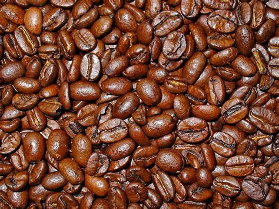
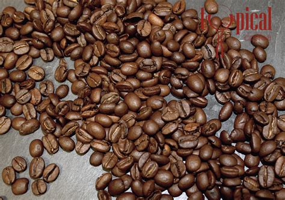
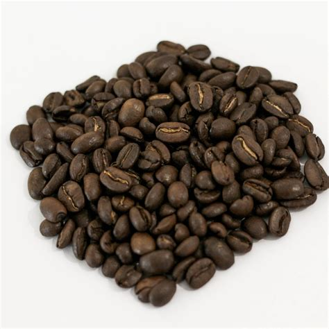
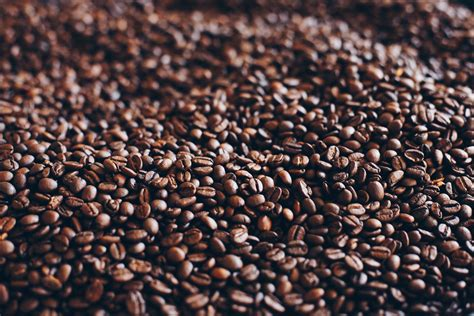

What is Coffee?
Coffee is one of the most popular drinks on the planet, and it all comes from that magical coffee bean. There is a good chance that you already know the coffee bean is a seed from the coffee plant. These beans have very different flavor profiles, and this is much of what allows coffee blends to create all the flavors and effects we expect out of our favorite bag of grounds.
Arabica
The vast majority of coffee that you find is going to fall into this category, at approximately 60%. It’s high quality and it generally comes from Latin America. There’s a reason that people really like this coffee species and continue to drink it in large quantities.
Robusta
Robusta is the second most popular species of coffee and it’s a strong and slightly bitter flavor, especially compared to Arabica beans. It’s generally used for strong coffee and for espresso because of this flavor profile. Not only that but it tends to have a higher caffeine level overall.
Liberica
With Liberica you’ll find a floral or even fruity aroma as well as a full body. They also have a relatively smoky or even woody flavor that’s quite distinctive. They were quite popular in the 1890’s as the Arabica bean suffered coffee rust. But when trade with the US ended it was the end of their popularity in the States.
Excelsa
Excelsa beans are a little more common, though still not much. They grow on giant trees of up to 30 feet and they taste more tart and fruity than other varieties. In general, these are used as part of a coffee blend rather than used as a pure type of coffee on their own.
Brewing Methods
| Drip | Pour Over | Espresso | Cold Brew |
|---|---|---|---|
| This is probably one of the easiest ways to make coffee because it uses a standard coffee machine. All you do is add water and coffee grounds and it produces the black coffee for you. Then you can customize it with anything you like. | This is another relatively simple method of preparing coffee, though it’s going to take a little more effort from you. That’s because you have to boil the water yourself then pour it through a filter of coffee grounds. But the end result is usually stronger. | Next up is espresso, which is done with an espresso machine. It uses pressurized hot water rather than just water dripping through the filter. This provides an even more concentrated amount of the coffee product, which is called a ‘shot.’ | Finally, you have cold brew coffee, which will give you low acidity but high caffeine because it actually steeps in room temperature water rather than hot. You can then cool it down even more in the fridge or by adding ice to really get a ‘cold brew.’ |